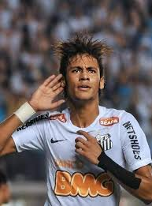

Добро пожаловать на сайт о Неймаре
Информация
Неймар - один из самых талантливых и популярных футболистов современности, известный своей техникой и скоростью. Родился 5 февраля 1992 года в Можи-дас-Крузис, Бразилия. Неймар начал свою профессиональную карьеру в "Сантосе" и в настоящее время играет за "Аль-Хилаль".
Биография
Неймар начал свою профессиональную карьеру в "Сантосе" в 2009 году. В 2013 году он перешел в "Барселону", где составил знаменитое трио нападения с Лионелем Месси и Луисом Суаресом. В 2017 году Неймар перешел в "Пари Сен-Жермен" за рекордную сумму. В 2023 году он присоединился к "Аль-Хилаль".

Достижения
Неймар имеет множество достижений, включая победы в Лиге чемпионов УЕФА, Ла Лиге, Лиге 1, а также Кубок Либертадорес. Он является одним из лучших бомбардиров в истории "Барселоны" и сборной Бразилии.
Личная жизнь
Вне поля Неймар известен своим активным образом жизни и многочисленными благотворительными проектами. Он отец одного сына, Дави Лукки, и часто делится моментами своей жизни в социальных сетях. Неймар также активно занимается бизнесом и имеет собственные бренды.

Статистика
- Забитые голы: более 400 в официальных матчах
- Победы в Лиге чемпионов УЕФА: 1
- Трофеи Лиги 1: 4
Контакты
Следите за последними новостями о Неймаре в социальных сетях: